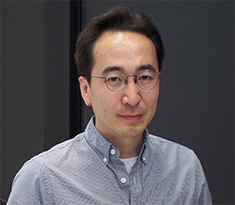

Sean/Sicun Gao
Assistant Professor [cv]
Computer Science and Engineering (AI, Robotics, PL)
University of California, San Diego
Office: CSE 2126
Email: sicung at ucsd dot edu
Research
- I work on practical algorithms for various classes of NP-hard problems, mostly over continuous spaces and mostly related to building better autonomous systems.
Teaching
Software
- dReal [tool page]
Automated reasoning in nonlinear theories over the reals.
- dReach [tool page]
Reachability analysis and planning for nonlinear hybrid systems.
Group
- PhD Students: Armaiti Ardeshiricham (with Ryan Kastner), Ya-Chien Chang, Chiaki Hirayama, Aditi Mavalankar, Sophia Sun, Zhi Wang, Yaoguang Zhai (with Francesco Paesani)
- Postdocs: Nima Roohi
- Alumni: Yongsoo Song (Microsoft Research), Jacek Cyranka (University of Warsaw)
Papers
- Neural Lyapunov Control
Ya-Chien Chang, Nima Roohi, and Sicun Gao
In NeurIPS (Conference on Neural Information Processing Systems) 2019
- VeriSketch: Synthesizing Secure Hardware Designs with Timing-Sensitive Information Flow Properties [pdf]
Armaiti Ardeshiricham, Yoshiki Takashima, Sicun Gao, and Ryan Kastner
In CCS (ACM Conference on Computer and Communications Security) 2019
- Numerically-Robust Inductive Proof Rules for Continuous Dynamical Systems [pdf]
Sicun Gao, James Kapinski, Jyotirmoy Deshmukh, Nima Roohi, Armando Solar-Lezama, Nikos Arechiga, and Soonho Kong
In CAV (International Conference on Computer Aided Verification) 2019
- Inverse Abstraction of Neural Networks Using Symbolic Interpolation [pdf]
Sumanth Dathathri, Sicun Gao, and Richard M. Murray
In AAAI (AAAI Conference on Artificial Intelligence) 2019
- Tight Continuous-Time Reachtubes for Lagrangian Reachability [pdf]
Jacek Cyranka, Md. Ariful Islam, Scott Smolka, Sicun Gao, and Radu Grosu
In CDC (IEEE Conference on Decision and Control) 2018
- Delta-Decision Procedures for Exists-Forall Problems over the Reals [pdf]
Soonho Kong, Armando Solar-Lezama, and Sicun Gao
In CAV (International Conference on Computer Aided Verification) 2018
- LEMAX: Learning-based Energy Consumption Minimization in Approximate Computing with Quality Guarantee
Vahideh Akhlaghi, Sicun Gao, and Rajesh Gupta
In DAC (Design Automation Conference) 2018
- Modular SMT-Based Analysis of Nonlinear Hybrid Systems [pdf]
Kyungmin Bae and Sicun Gao
In FMCAD (Formal Methods in Computer-Aided Design) 2017
- Learning-Based Abstractions for Nonlinear Constraint Solving [pdf]
Sumanth Dathathri, Nikos Arechiga, Sicun Gao, and Richard M. Murray
In IJCAI (International Joint Conference on Artificial Intelligence) 2017
- Interpolants in Nonlinear Theories over the Reals [pdf]
Sicun Gao and Damien Zufferey
In TACAS (International Conference on Tools and Algorithms for the Construction and Analysis of Systems) 2016
- APEX: A Tool for Autonomous Vehicle Plan Verification and Execution [pdf]
Matthew O'Kelly, Houssam Abbas, Sicun Gao, Shin'ichi Shiraishi, Shinpei Kato, and Rahul Mangharam
In SAE (Society of Automotive Engineers) World Congress and Exhibition 2016
- SMT-Based Analysis of Virtually Synchronous Distributed Hybrid Systems [pdf]
Kyungmin Bae, Peter Olveczky, Soonho Kong, and Sicun Gao
In HSCC (ACM International Conference on Hybrid Systems: Computation and Control) 2016
- Automated Vulnerability Analysis of AC State Estimation under Constrained False Data Injection in Electric Power Systems [pdf]
Sicun Gao, Le Xie, Armando Solar-Lezama, Dimitrios Serpanos, and Howard Shrobe
In CDC (IEEE Conference on Decision and Control) 2015
- dReach: Delta-Reachability Analysis for Hybrid Systems [pdf]
Soonho Kong, Sicun Gao, Wei Chen, and Edmund Clarke
In TACAS (International Conference on Tools and Algorithms for the Construction and Analysis of Systems) 2015
- SMT-Based Nonlinear PDDL+ Planning [pdf]
Daniel Bryce, Sicun Gao, David Musliner, and Robert P. Goldman
In AAAI (AAAI Conference on Artificial Intelligence) 2015
- Towards Personalized Prostate Cancer Therapy Using Delta-Reachability Analysis [pdf]
Bing Liu, Soonho Kong, Sicun Gao, Paolo Zuliani, and Edmund Clarke
In HSCC (ACM International Conference on Hybrid Systems: Computation and Control) 2015
-
Parameter Synthesis for Cardiac Cell Hybrid Models Using Delta-Decisions [arXiv]
Bing Liu, Soonho Kong, Sicun Gao, Paolo Zuliani, and Edmund Clarke
In CMSB (Computational Methods in Systems Biology) 2014
- Proof Generation from Delta-Decisions [arXiv]
Sicun Gao, Soonho Kong, and Edmund Clarke
In SYNASC (International Conference on Symbolic and Numerical Algorithms for Scientific Computing) 2014
- Satisfiability Modulo ODEs [pdf]
Sicun Gao, Soonho Kong, and Edmund Clarke
In FMCAD (Formal Methods in Computer-Aided Design)
2013
- Floating-point Bugs in the Embedded GNU C Library [pdf]
Soonho Kong, Sicun Gao, and Edmund Clarke
CMU SCS Technical Report CMU-CS-13-130 2013
- dReal: An SMT Solver for Nonlinear Theories of Reals [pdf] [tool]
Sicun Gao, Soonho Kong, and Edmund Clarke
In CADE (International
Conference on Automated Deduction) 2013
- Computable Analysis, Hybrid Automata, and Decision Procedures: A New Framework for the Formal Verification of Cyber-Physical Systems [extended abstract]
PhD Thesis in Logic, Carnegie Mellon University 2012
Committee: Edmund Clarke (co-chair), Jeremy Avigad
(co-chair), Lenore Blum, Randy Bryant, and Jeannette Wing
- Delta-Complete Decision Procedures for Satisfiability over the
Reals [pdf]
Sicun Gao, Jeremy Avigad, and Edmund Clarke
In IJCAR
(International Joint Conference on Automated Reasoning) 2012
- Delta-Decidability over the Reals [arXiv]
Sicun Gao, Jeremy
Avigad, and Edmund Clarke
In LICS (Logic in Computer Science) 2012
- Quantifier Elimination over Finite Fields with Groebner Bases [arXiv]
Sicun Gao, Andre Platzer, and Edmund Clarke
In CAI (International
Conference on Algebraic Informatics) 2011
- Integrating ICP and LRA Solvers for Deciding Nonlinear Real Arithmetic [pdf]
Sicun Gao, Malay Ganai, Franjo Ivancic, Aarti Gupta,
Sriram Sankaranarayanan, and Edmund Clarke
In FMCAD (Formal
Methods in Computer Aided Design) 2010
- A Non-Prenex DPLL-Based QBF Solver with Game-State Learning [pdf]
William Klieber, Samir Sapra, Sicun Gao, and Edmund Clarke
In SAT
(Theory and Applications of Satisfiability Testing) 2010
- Counting Zeros over Finite Fields with Groebner Bases [pdf]
MS
Thesis in Logic, Carnegie Mellon University 2009
Funding
- Air Force Young Investigator
- DARPA Assured Autonomy
- NSF National Robotics Initiative
- NSF Cyber-Physical Systems
The infinite we shall do right away. The finite may take a little longer. -- Stanislaw Ulam